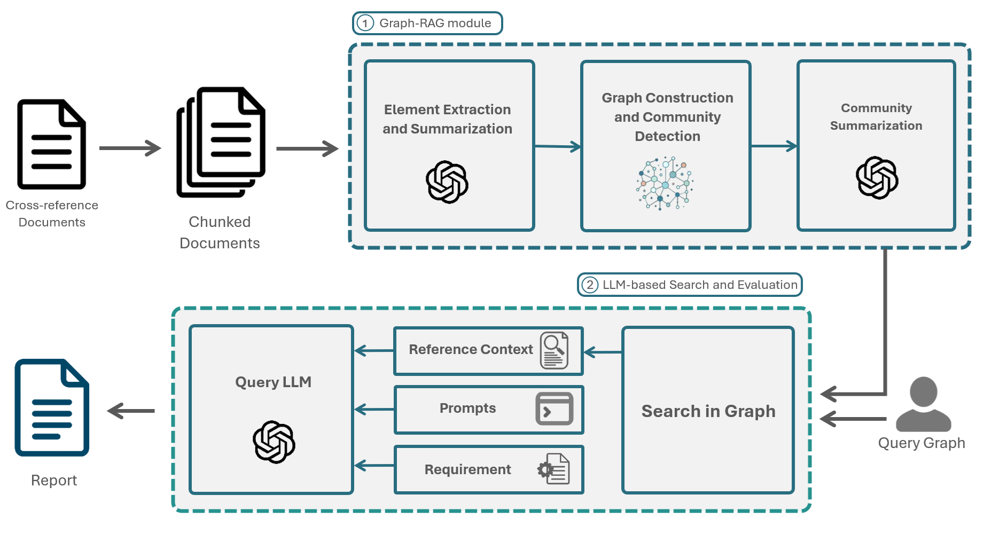

2024 · Publication · arXiv:2412.08593
Graph-RAG for
SRS Compliance
A framework for checking whether Software Requirements Specifications are complete, traceable, and aligned with higher-level standards by combining structured Graph-RAG retrieval with LLM reasoning.

Overview
This work adapts Microsoft Graph-RAG to retrieve evidence from domain-specific corpora and evaluate an SRS against organizational, regulatory, or technical reference material. Extracted entities and relationships are organized into communities and summarized, giving the language model structured context rather than isolated text passages.